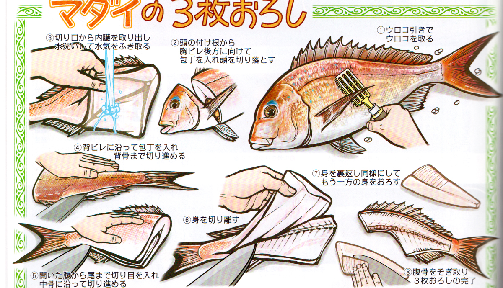
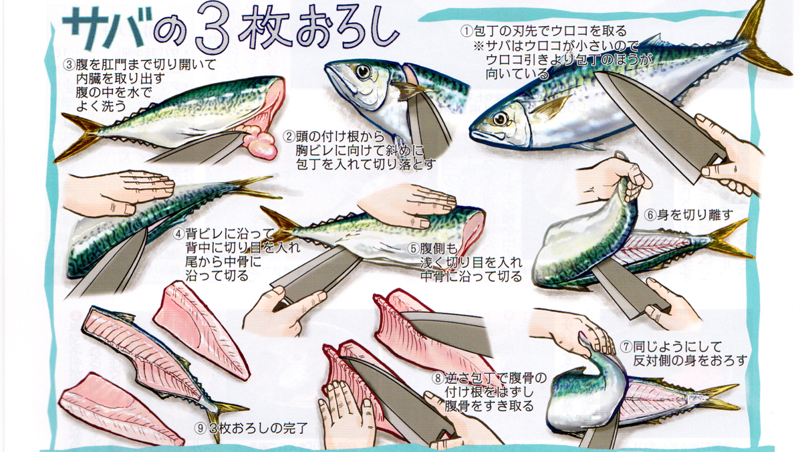
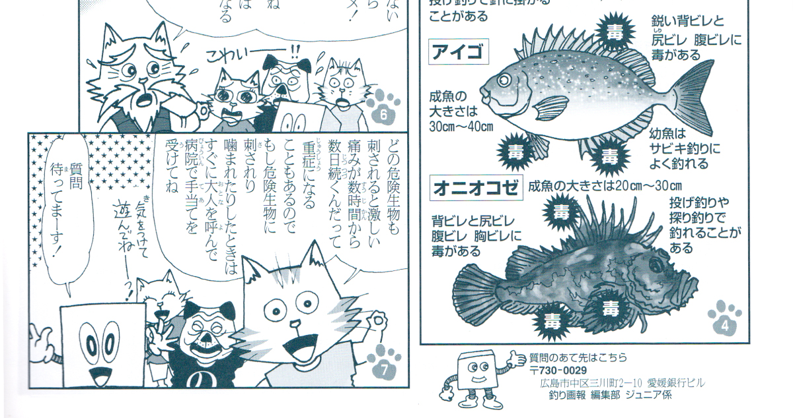
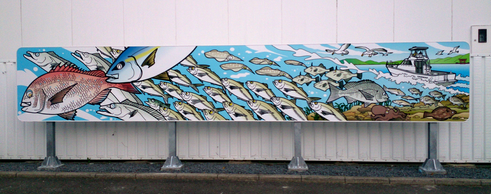
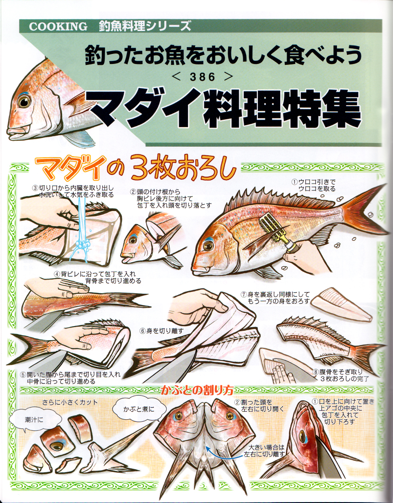

解説マンガ・図鑑マンガ
解説マンガ / キャラクター
釣り方のコツや生きものの知識を、キャラクターとマンガで楽しく解説。





文章だけでは伝わりにくい手順を、リアルなイラストと工程図解、タイトルデザインまで含めて 1ページにまとめています。読者が見ただけで作業を再現できる「伝わる誌面」を目指し、 長期連載として制作を続けています。
「マンガで伝える」「図解でわかりやすくする」「キャラで親しみを生む」「大きく目を引く」—— 目的に合わせて表現を使い分けています。ボタンでジャンルをしぼり込めます。
釣り方のコツや生きものの知識を、キャラクターとマンガで楽しく解説。
タイトル・イラスト・図解・レイアウトまで一貫制作した雑誌連載の誌面。
企業施設向けに制作した大型看板。遠くからでも目を引く迫力ある一枚。
複雑な手順や道具の構造を、段階を追って一目でわかるように図解。
包丁の角度や手の添え方まで、捌き方の手順を一目で理解できる図解。
質感や鮮やかな体色まで描き込んだ、図鑑・媒体向けのリアルイラスト。
「むずかしいことを、わかりやすく」を専門にするイラストレーター。 解説マンガ、図解、キャラクター、大型看板まで、表現の引き出しの広さが強みです。
得意なのは情報を整理して"伝わる絵"にする力。 専門的で複雑な内容も、読み手が直感的に理解できるマンガや図解に翻訳します。 1人で「描く」から「誌面にまとめる」まで完結できます。
雑誌では手順解説の長期連載を担当。テーマに合わせて、 リアルな描写からゆるいキャラクターまで、絵柄を自在に使い分けます。